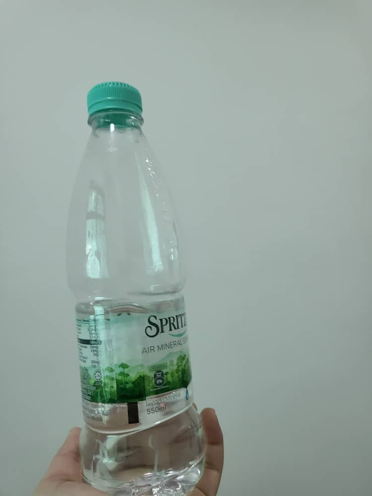
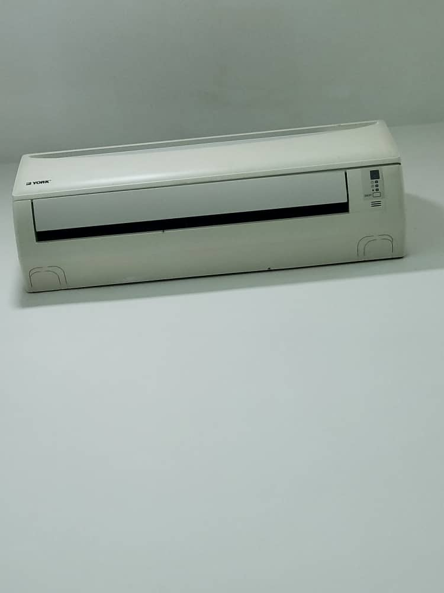
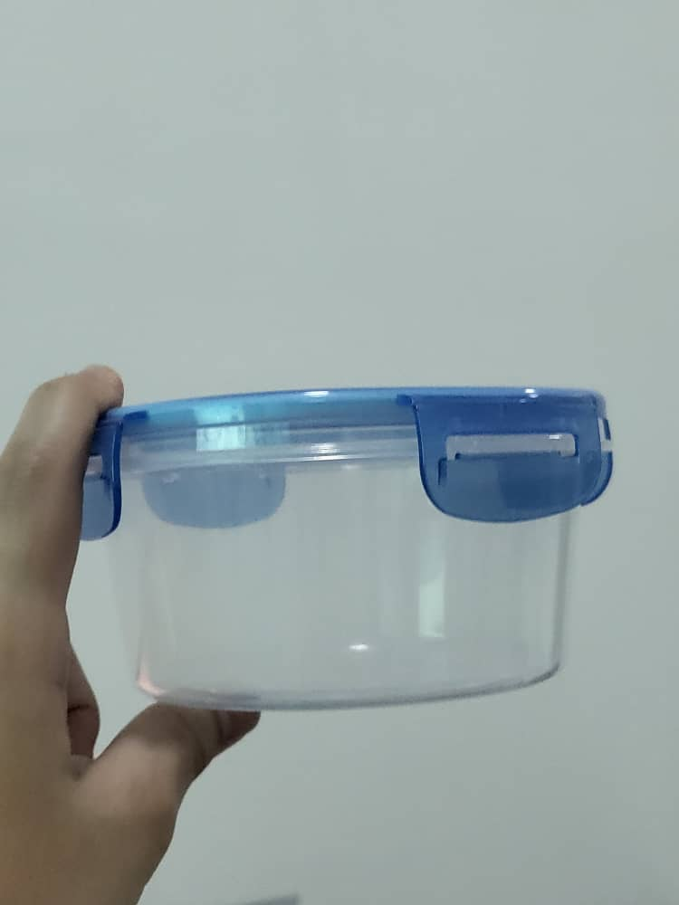
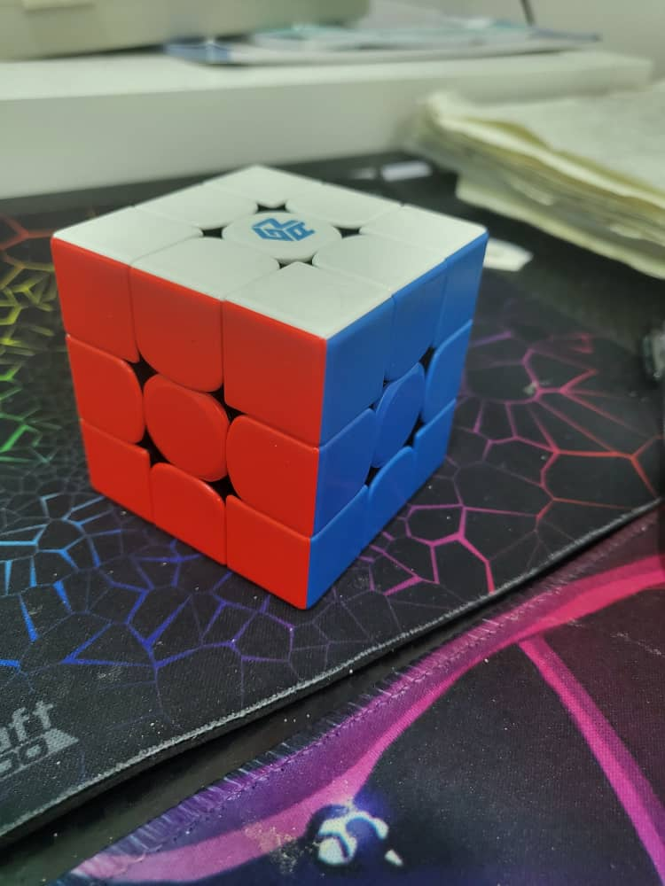
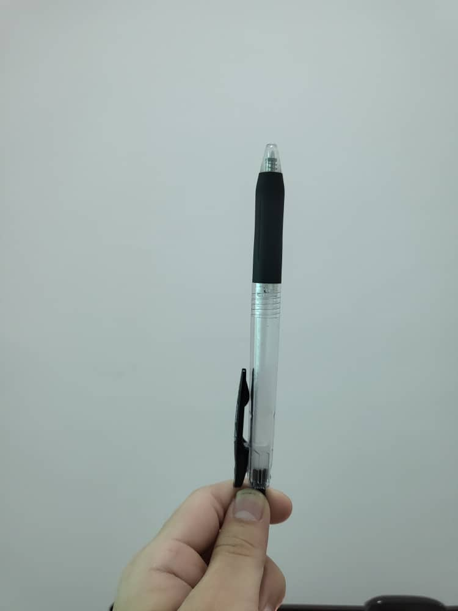
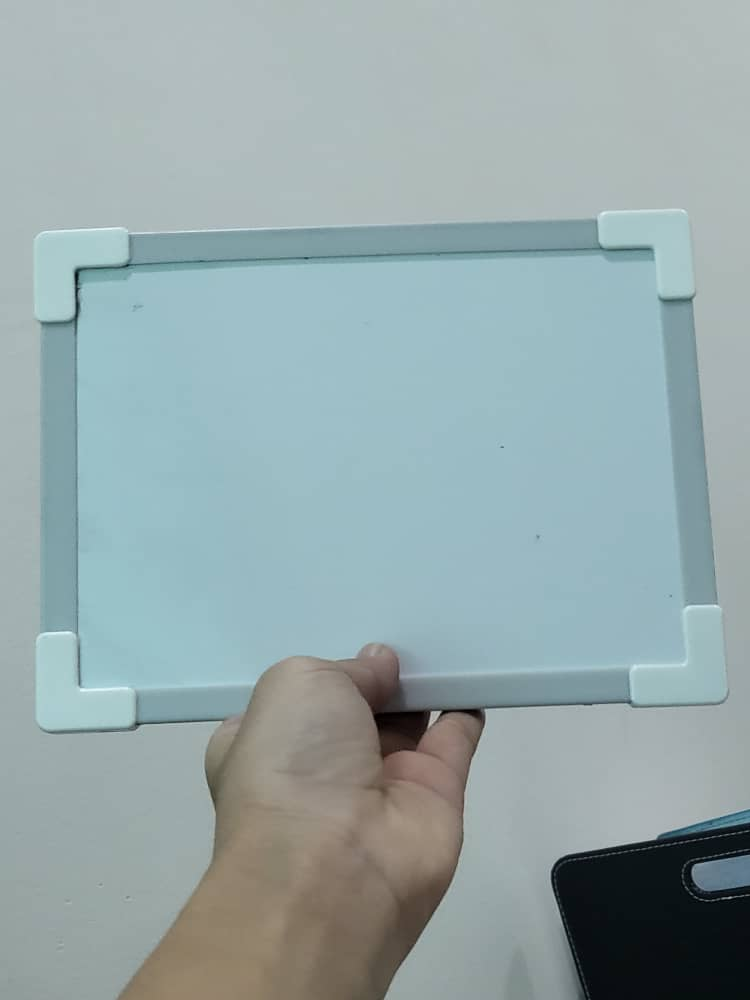
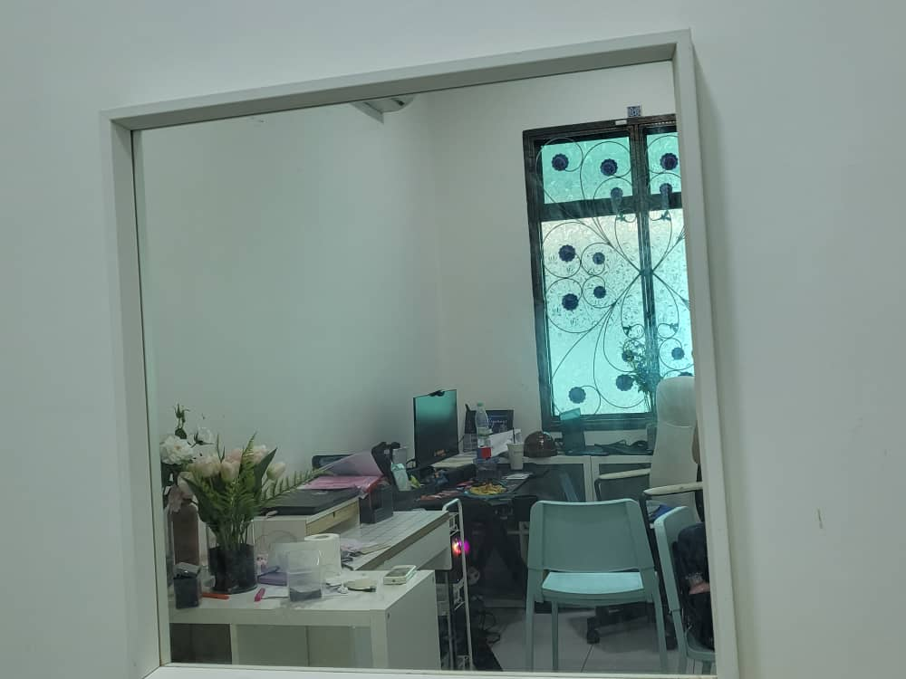
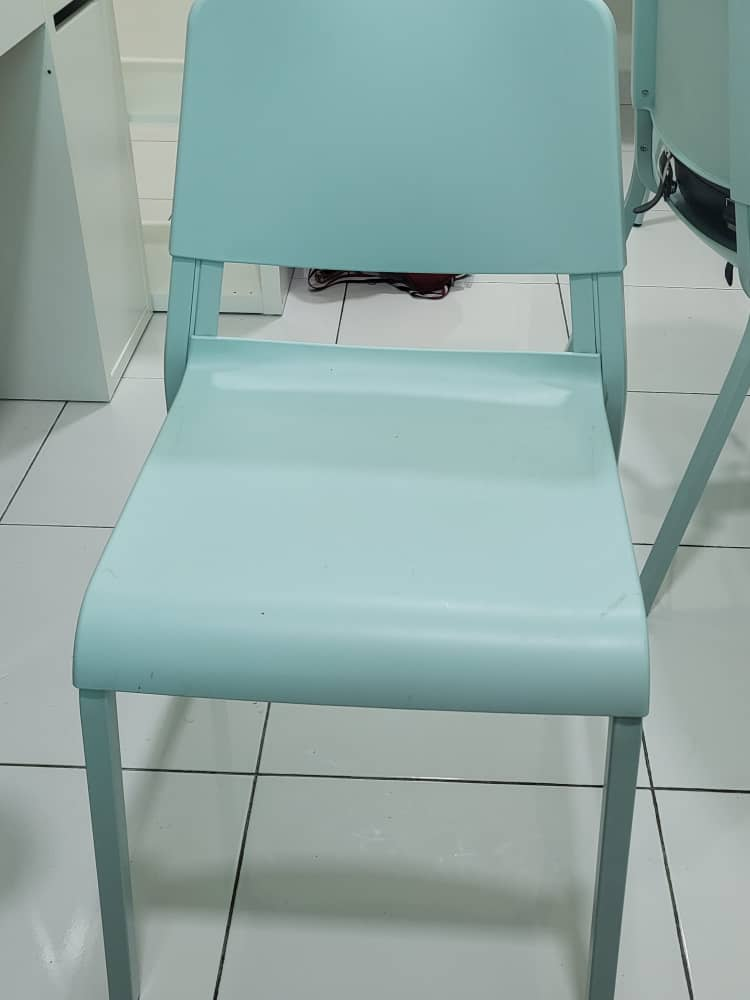

- Test Image - 
Output on GOOGLE LENS - MINERAL WATER
Output on MOBILENET MODEL - WATER BOTTLE
Result -
Google lens is abit more accurate
- Test Image - 
Output on GOOGLE LENS - AIRCON/AIR CONDITIONER
Output on MOBILENET MODEL - television, television system
Result -
Google lens is way more accurate
- Test Image - 
Output on GOOGLE LENS - STORAGE CONTAINER
Output on MOBILENET MODEL - WATER JUG
Result -
Google lens is more accurate
- Test Image - 
Output on GOOGLE LENS - GAN 356 M Stickerless,RUBIKS CUBE
Output on MOBILENET MODEL - OIL FILTER
Result -
Google lens is way too accurate, while mobile net is..
-
Test Image -

Output on GOOGLE LENS - PLUSHIE
Output on MOBILENET MODEL - MASK
Result -
Google lens is on fire
- Test Image - 
Output on GOOGLE LENS - PEN
Output on MOBILENET MODEL - VACUUM, VACUUM CLEANER
Result -
google lens is way way more accurate than Mobilenet
- Test Image - 
Output on GOOGLE LENS - WHITEBOARD
Output on MOBILENET MODEL - PAPER TOWEL
Result -
Google lens is way more accurate
-
Test Image -

Output on GOOGLE LENS - WHITEBOARD MARKER
Output on MOBILENET MODEL - VACUUM, VACUUM CKEANER
Result -
Google Lens is accurate while mobilenet isnt
- Test Image - 
Output on GOOGLE LENS - MIRROR
Output on MOBILENET MODEL - MEDICINE CHEST, MEDICINE CABINET
Result -
Google lens is right on the spot!
- Test Image - 